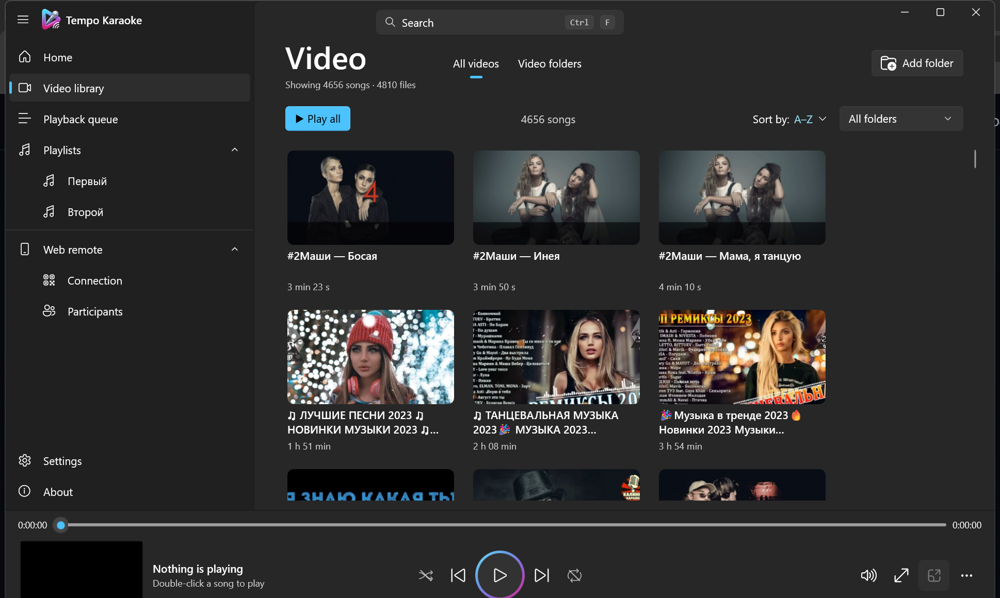

Локальная медиатека без ожидания
Индексирование любого числа папок рекурсивно. Кэш SQLite по размеру и времени изменения, фоновые метаданные и превью делают повторный запуск мгновенным даже при тысячах песен.
Tempo Karaoke превращает любую папку с караоке-видео в быстрый и красивый каталог. Гости ищут и заказывают песни со своих телефонов, а видео играет на большом экране.
Это настоящая страница пульта из приложения с демо-библиотекой. Ищите, добавляйте в очередь и нажимайте play.
Пять экранов нативного Windows-приложения. Переключайтесь по вкладкам, стрелкам ← → или откройте скриншот на весь экран.
 Tempo Karaoke
—
Медиатека · 4 656 песен
Tempo Karaoke
—
Медиатека · 4 656 песен

Большие локальные коллекции, заказы с телефонов и долгие вечера — без папок, таблиц и облачных аккаунтов.
Индексирование любого числа папок рекурсивно. Кэш SQLite по размеру и времени изменения, фоновые метаданные и превью делают повторный запуск мгновенным даже при тысячах песен.
Нечёткое совпадение, транслитерация RU/EN и исправление раскладки. Результаты появляются быстрее следующего кадра, сортируются по релевантности и группируют версии песен.
«Воспроизвести следующим», перетаскивание, отмена, импорт/экспорт M3U и очередь, которая переживает перезапуск.
Открепите видео на телевизор или проектор, оставив панель управления на ноутбуке.
Перемотка, скорость, 10-полосный эквалайзер, перемешивание, повтор и отсчёт между песнями.
Автопроверка релизов GitHub, системный тост, плашка обновления и тихий установщик, сохраняющий настройки, очередь, плейлисты и кэш. Установка — только после подтверждения.
Без загрузки медиа и аккаунтов. PIN хранится как соль + хэш PBKDF2, диагностика маскирует приватные пути, а медиатека никогда не изменяется.
Запустите встроенный веб-сервер, покажите QR-код — и гости откроют каталог в любом современном браузере. Управление воспроизведением, громкостью и очередью остаётся у вас.
Приложение не нужно — работает в iOS и Android через Wi-Fi или Wi-Fi Direct.
Гости ищут песни, отправляют заявки и видят свою позицию в живой очереди.
Ведущий приоритизирует заявки, пропускает треки и управляет воспроизведением по PIN.
Последний установщик публикуется в GitHub Releases. Без установки VLC, конвертации медиа и аккаунта.